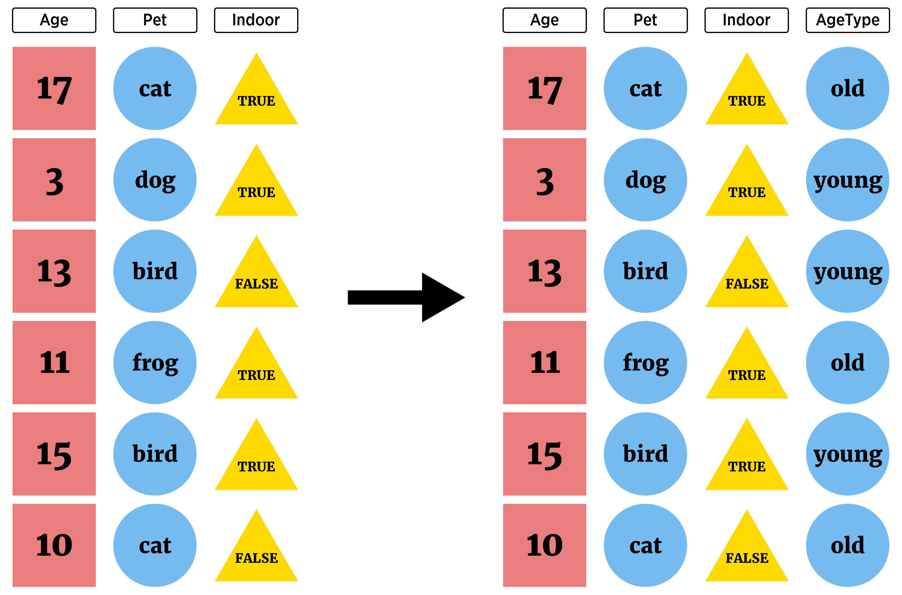

my_data |>
select(var1:var10, var20) |>
filter(var1 == "first") |>
mutate(new_var = lag(var20)) |>
...Manipulating Data with dplyr
Thinking about our big goals (doing data science):
- Read in raw data and manipulate it
- Combine data sources
- Summarize data to glean insights
- Apply common analysis methods
- Communicate Effectively
We now have a good idea about reading in certain types of data. Let’s take a bit of time going through common data manipulation tasks before returning to reading data in.
The two major tasks we’ll consider are
Row manipulations
- filtering or subsetting our observations
- arranging our observations in some order
Column manipulations
- selecting a subset of our variables
- rename a column
- mutating our data frame to create a new variable
We can use BaseR for this (via [ or the subset() function). However, the tidyverse has a more coherent set of functions to allow us to do all of our tasks without having to spend as much time learning syntax. So let’s go that route!
Recall the basic fundamentals about the tidyverse:
(Almost) all functions take in
tibbles (special data frames) and outputtibbles(Almost) all functions have similar syntax!
function(tibble, arguments, ...)- Allows for easy chaining!
Coercing a Data Frame to a Tibble
If you happen to have a data frame that isn’t already a tibble, we can easily coerce it using the as_tibble() function.
Consider a data set on major league baseball players (batting statistics):
library(dplyr)
Attaching package: 'dplyr'The following objects are masked from 'package:stats':
filter, lagThe following objects are masked from 'package:base':
intersect, setdiff, setequal, unionlibrary(Lahman)Warning: package 'Lahman' was built under R version 4.1.3batting_tbl <- as_tibble(Batting)
batting_tbl# A tibble: 108,789 x 22
playerID yearID stint teamID lgID G AB R H X2B X3B HR
<chr> <int> <int> <fct> <fct> <int> <int> <int> <int> <int> <int> <int>
1 abercda01 1871 1 TRO NA 1 4 0 0 0 0 0
2 addybo01 1871 1 RC1 NA 25 118 30 32 6 0 0
3 allisar01 1871 1 CL1 NA 29 137 28 40 4 5 0
4 allisdo01 1871 1 WS3 NA 27 133 28 44 10 2 2
5 ansonca01 1871 1 RC1 NA 25 120 29 39 11 3 0
6 armstbo01 1871 1 FW1 NA 12 49 9 11 2 1 0
7 barkeal01 1871 1 RC1 NA 1 4 0 1 0 0 0
8 barnero01 1871 1 BS1 NA 31 157 66 63 10 9 0
9 barrebi01 1871 1 FW1 NA 1 5 1 1 1 0 0
10 barrofr01 1871 1 BS1 NA 18 86 13 13 2 1 0
# i 108,779 more rows
# i 10 more variables: RBI <int>, SB <int>, CS <int>, BB <int>, SO <int>,
# IBB <int>, HBP <int>, SH <int>, SF <int>, GIDP <int>Nice, now we can work on this tibble!
Row Manipulations with dplyr
A common task is to only grab certain types of observations (filter rows)

or rearrange the order of the observations (rows). The two functions from dplyr that help us here are
filter()- subset rowsarrange()- reorder rows
filter()
filter() generally takes a tibble as its first argument and then a logical vector as the next (of the same length as the number of rows):
- Return observations where the number of games played is greater than 50 (the
Gcolumn):
filter(batting_tbl, G > 50)# A tibble: 40,168 x 22
playerID yearID stint teamID lgID G AB R H X2B X3B HR
<chr> <int> <int> <fct> <fct> <int> <int> <int> <int> <int> <int> <int>
1 bechtge01 1872 1 NY2 NA 51 247 61 74 11 3 0
2 cummica01 1872 1 NY2 NA 55 249 37 52 9 3 0
3 eggleda01 1872 1 NY2 NA 56 290 94 97 20 0 0
4 hallge01 1872 1 BL1 NA 53 250 69 84 17 6 1
5 hatfijo01 1872 1 NY2 NA 56 288 76 93 15 2 1
6 hicksna01 1872 1 NY2 NA 56 267 54 82 12 2 0
7 mcmuljo01 1872 1 NY2 NA 54 236 47 60 6 1 0
8 millsev01 1872 1 BL1 NA 55 266 55 79 14 2 0
9 pikeli01 1872 1 BL1 NA 56 285 68 85 15 5 7
10 radcljo01 1872 1 BL1 NA 56 297 70 86 13 4 1
# i 40,158 more rows
# i 10 more variables: RBI <int>, SB <int>, CS <int>, BB <int>, SO <int>,
# IBB <int>, HBP <int>, SH <int>, SF <int>, GIDP <int>Notice the number of observations is far less now!
- Of course, we’ll do many operations so let’s use chaining even in this simple case:
batting_tbl |>
filter(G > 50)# A tibble: 40,168 x 22
playerID yearID stint teamID lgID G AB R H X2B X3B HR
<chr> <int> <int> <fct> <fct> <int> <int> <int> <int> <int> <int> <int>
1 bechtge01 1872 1 NY2 NA 51 247 61 74 11 3 0
2 cummica01 1872 1 NY2 NA 55 249 37 52 9 3 0
3 eggleda01 1872 1 NY2 NA 56 290 94 97 20 0 0
4 hallge01 1872 1 BL1 NA 53 250 69 84 17 6 1
5 hatfijo01 1872 1 NY2 NA 56 288 76 93 15 2 1
6 hicksna01 1872 1 NY2 NA 56 267 54 82 12 2 0
7 mcmuljo01 1872 1 NY2 NA 54 236 47 60 6 1 0
8 millsev01 1872 1 BL1 NA 55 266 55 79 14 2 0
9 pikeli01 1872 1 BL1 NA 56 285 68 85 15 5 7
10 radcljo01 1872 1 BL1 NA 56 297 70 86 13 4 1
# i 40,158 more rows
# i 10 more variables: RBI <int>, SB <int>, CS <int>, BB <int>, SO <int>,
# IBB <int>, HBP <int>, SH <int>, SF <int>, GIDP <int>If we want to return observations where than one condition is
TRUEwe can either pass additional arguments or use the compound logical operator&we discussed earlier.- Condition on those that played more than 50 games and played in 2018
batting_tbl |>
filter(G > 50 & yearID == 2018)# A tibble: 518 x 22
playerID yearID stint teamID lgID G AB R H X2B X3B HR
<chr> <int> <int> <fct> <fct> <int> <int> <int> <int> <int> <int> <int>
1 abreujo02 2018 1 CHA AL 128 499 68 132 36 1 22
2 acunaro01 2018 1 ATL NL 111 433 78 127 26 4 26
3 adamewi01 2018 1 TBA AL 85 288 43 80 7 0 10
4 adamsma01 2018 1 WAS NL 94 249 37 64 9 0 18
5 adducji02 2018 1 DET AL 59 176 19 47 8 2 3
6 adriaeh01 2018 1 MIN AL 114 335 42 84 23 1 6
7 aguilje01 2018 1 MIL NL 149 492 80 135 25 0 35
8 ahmedni01 2018 1 ARI NL 153 516 61 121 33 5 16
9 albieoz01 2018 1 ATL NL 158 639 105 167 40 5 24
10 alexasc01 2018 1 LAN NL 73 5 0 0 0 0 0
# i 508 more rows
# i 10 more variables: RBI <int>, SB <int>, CS <int>, BB <int>, SO <int>,
# IBB <int>, HBP <int>, SH <int>, SF <int>, GIDP <int>#equivalently
batting_tbl |>
filter(G > 50, yearID == 2018)# A tibble: 518 x 22
playerID yearID stint teamID lgID G AB R H X2B X3B HR
<chr> <int> <int> <fct> <fct> <int> <int> <int> <int> <int> <int> <int>
1 abreujo02 2018 1 CHA AL 128 499 68 132 36 1 22
2 acunaro01 2018 1 ATL NL 111 433 78 127 26 4 26
3 adamewi01 2018 1 TBA AL 85 288 43 80 7 0 10
4 adamsma01 2018 1 WAS NL 94 249 37 64 9 0 18
5 adducji02 2018 1 DET AL 59 176 19 47 8 2 3
6 adriaeh01 2018 1 MIN AL 114 335 42 84 23 1 6
7 aguilje01 2018 1 MIL NL 149 492 80 135 25 0 35
8 ahmedni01 2018 1 ARI NL 153 516 61 121 33 5 16
9 albieoz01 2018 1 ATL NL 158 639 105 167 40 5 24
10 alexasc01 2018 1 LAN NL 73 5 0 0 0 0 0
# i 508 more rows
# i 10 more variables: RBI <int>, SB <int>, CS <int>, BB <int>, SO <int>,
# IBB <int>, HBP <int>, SH <int>, SF <int>, GIDP <int>- Often we want to check if a variable is in a specific group of values. We might think this is the way:
#wrong!
batting_tbl |>
filter(G > 50, yearID == c(2018, 2019, 2020))# A tibble: 408 x 22
playerID yearID stint teamID lgID G AB R H X2B X3B HR
<chr> <int> <int> <fct> <fct> <int> <int> <int> <int> <int> <int> <int>
1 abreujo02 2018 1 CHA AL 128 499 68 132 36 1 22
2 adducji02 2018 1 DET AL 59 176 19 47 8 2 3
3 ahmedni01 2018 1 ARI NL 153 516 61 121 33 5 16
4 albieoz01 2018 1 ATL NL 158 639 105 167 40 5 24
5 alexasc01 2018 1 LAN NL 73 5 0 0 0 0 0
6 almoral01 2018 1 CHN NL 152 444 62 127 24 1 5
7 altheaa01 2018 1 PHI NL 105 243 28 44 11 1 8
8 alvarjo03 2018 1 TBA AL 70 0 0 0 0 0 0
9 anderbr06 2018 1 MIA NL 156 590 87 161 34 4 11
10 anderju01 2018 1 LAA AL 57 0 0 0 0 0 0
# i 398 more rows
# i 10 more variables: RBI <int>, SB <int>, CS <int>, BB <int>, SO <int>,
# IBB <int>, HBP <int>, SH <int>, SF <int>, GIDP <int>- Here, R uses recycling on the vector and actually compares the 1st element to 2018, the 2nd to 2019, the third to 2020, the fourth to 2018, the fifth to 2019, …
- Use
%in%to choose any observations matching an element of a vector
batting_tbl |>
filter(G > 50, yearID %in% c(2018, 2019, 2020))# A tibble: 1,172 x 22
playerID yearID stint teamID lgID G AB R H X2B X3B HR
<chr> <int> <int> <fct> <fct> <int> <int> <int> <int> <int> <int> <int>
1 abreujo02 2018 1 CHA AL 128 499 68 132 36 1 22
2 acunaro01 2018 1 ATL NL 111 433 78 127 26 4 26
3 adamewi01 2018 1 TBA AL 85 288 43 80 7 0 10
4 adamsma01 2018 1 WAS NL 94 249 37 64 9 0 18
5 adducji02 2018 1 DET AL 59 176 19 47 8 2 3
6 adriaeh01 2018 1 MIN AL 114 335 42 84 23 1 6
7 aguilje01 2018 1 MIL NL 149 492 80 135 25 0 35
8 ahmedni01 2018 1 ARI NL 153 516 61 121 33 5 16
9 albieoz01 2018 1 ATL NL 158 639 105 167 40 5 24
10 alexasc01 2018 1 LAN NL 73 5 0 0 0 0 0
# i 1,162 more rows
# i 10 more variables: RBI <int>, SB <int>, CS <int>, BB <int>, SO <int>,
# IBB <int>, HBP <int>, SH <int>, SF <int>, GIDP <int>If we want an or condition, we use the compound logical operator for that
- Here, grab those with either games greater than 50 or those that played in 2018, 2019, or 2020 (or both)
batting_tbl |>
filter(G > 50 | yearID %in% c(2018, 2019, 2020))# A tibble: 43,460 x 22
playerID yearID stint teamID lgID G AB R H X2B X3B HR
<chr> <int> <int> <fct> <fct> <int> <int> <int> <int> <int> <int> <int>
1 bechtge01 1872 1 NY2 NA 51 247 61 74 11 3 0
2 cummica01 1872 1 NY2 NA 55 249 37 52 9 3 0
3 eggleda01 1872 1 NY2 NA 56 290 94 97 20 0 0
4 hallge01 1872 1 BL1 NA 53 250 69 84 17 6 1
5 hatfijo01 1872 1 NY2 NA 56 288 76 93 15 2 1
6 hicksna01 1872 1 NY2 NA 56 267 54 82 12 2 0
7 mcmuljo01 1872 1 NY2 NA 54 236 47 60 6 1 0
8 millsev01 1872 1 BL1 NA 55 266 55 79 14 2 0
9 pikeli01 1872 1 BL1 NA 56 285 68 85 15 5 7
10 radcljo01 1872 1 BL1 NA 56 297 70 86 13 4 1
# i 43,450 more rows
# i 10 more variables: RBI <int>, SB <int>, CS <int>, BB <int>, SO <int>,
# IBB <int>, HBP <int>, SH <int>, SF <int>, GIDP <int>- Again, note the change in the observation count!
arrange()
The other major observation (row) manipulation is to reorder the observations (rows). This is done through arrange() from dplyr (or sort() in BaseR)
- Let’s take our result from above and reorder by
teamID
batting_tbl |>
filter(G > 50, yearID %in% c(2018, 2019, 2020)) |>
arrange(teamID)# A tibble: 1,172 x 22
playerID yearID stint teamID lgID G AB R H X2B X3B HR
<chr> <int> <int> <fct> <fct> <int> <int> <int> <int> <int> <int> <int>
1 ahmedni01 2018 1 ARI NL 153 516 61 121 33 5 16
2 avilaal01 2018 1 ARI NL 80 194 13 32 6 0 7
3 boxbebr01 2018 1 ARI NL 60 0 0 0 0 0 0
4 bradlar01 2018 1 ARI NL 76 0 0 0 0 0 0
5 chafian01 2018 1 ARI NL 77 0 0 0 0 0 0
6 descada01 2018 1 ARI NL 138 349 54 83 22 4 13
7 dysonja01 2018 1 ARI NL 67 206 29 39 4 2 2
8 escobed01 2018 2 ARI NL 54 198 30 53 11 0 8
9 goldspa01 2018 1 ARI NL 158 593 95 172 35 5 33
10 hiranyo01 2018 1 ARI NL 75 1 0 0 0 0 0
# i 1,162 more rows
# i 10 more variables: RBI <int>, SB <int>, CS <int>, BB <int>, SO <int>,
# IBB <int>, HBP <int>, SH <int>, SF <int>, GIDP <int>Remember to read the pipe (
|>) as ‘then’. Here we would say:Take the batting tibble and then
filter the rows to only include those with games greater than 50 and those that played in 2018-2020 and then
arrange the rows by the team name
We can obtain a secondary arrangement by giving a second column
batting_tbl |>
filter(G > 50, yearID %in% c(2018, 2019, 2020)) |>
arrange(teamID, playerID)# A tibble: 1,172 x 22
playerID yearID stint teamID lgID G AB R H X2B X3B HR
<chr> <int> <int> <fct> <fct> <int> <int> <int> <int> <int> <int> <int>
1 ahmedni01 2018 1 ARI NL 153 516 61 121 33 5 16
2 ahmedni01 2019 1 ARI NL 158 556 79 141 33 6 19
3 ahmedni01 2020 1 ARI NL 57 199 29 53 10 1 5
4 andrima01 2019 1 ARI NL 54 6 0 0 0 0 0
5 avilaal01 2018 1 ARI NL 80 194 13 32 6 0 7
6 avilaal01 2019 1 ARI NL 63 164 22 34 8 0 9
7 boxbebr01 2018 1 ARI NL 60 0 0 0 0 0 0
8 bradlar01 2018 1 ARI NL 76 0 0 0 0 0 0
9 bradlar01 2019 1 ARI NL 66 1 0 0 0 0 0
10 calhoko01 2020 1 ARI NL 54 190 35 43 9 0 16
# i 1,162 more rows
# i 10 more variables: RBI <int>, SB <int>, CS <int>, BB <int>, SO <int>,
# IBB <int>, HBP <int>, SH <int>, SF <int>, GIDP <int>- We can reorder descending on a variable
batting_tbl |>
filter(G > 50, yearID %in% c(2018, 2019, 2020)) |>
arrange(desc(teamID), playerID)# A tibble: 1,172 x 22
playerID yearID stint teamID lgID G AB R H X2B X3B HR
<chr> <int> <int> <fct> <fct> <int> <int> <int> <int> <int> <int> <int>
1 adamsma01 2018 1 WAS NL 94 249 37 64 9 0 18
2 adamsma01 2019 1 WAS NL 111 310 42 70 14 0 20
3 cabreas01 2020 1 WAS NL 52 190 23 46 9 3 8
4 difowi01 2018 1 WAS NL 148 408 55 94 14 7 7
5 doolise01 2019 1 WAS NL 63 3 0 0 0 0 0
6 doziebr01 2019 1 WAS NL 135 416 54 99 20 0 20
7 eatonad02 2018 1 WAS NL 95 319 55 96 18 1 5
8 eatonad02 2019 1 WAS NL 151 566 103 158 25 7 15
9 gomesya01 2019 1 WAS NL 97 314 36 70 16 0 12
10 gracema02 2018 1 WAS NL 56 3 0 1 0 0 0
# i 1,162 more rows
# i 10 more variables: RBI <int>, SB <int>, CS <int>, BB <int>, SO <int>,
# IBB <int>, HBP <int>, SH <int>, SF <int>, GIDP <int>Column Manipulations with dplyr
We may want to subset our variables, rename them, or create new variables.
select() - Subset Columns
We call the subset of our variables selecting columns (or variables)

To return a single (probably simplified) column we looked at the following methods (one of which is in the
tidyverse):dplyr::pull()$[ , ]
When we want to look at pulling more than one column, select() is much better!
Suppose we just wanted to look at the
playerID,teamID, and hits type variables:H,X2BX3B, andHRof the players in our subsetWe can add in a
select()function to our chain (thanks again coherent ecosystem!).- One way is to simply list the columns you want:
batting_tbl |>
filter(G > 50, yearID %in% c(2018, 2019, 2020)) |>
arrange(desc(teamID), playerID) |>
select(playerID, teamID, H, X2B, X3B, HR)# A tibble: 1,172 x 6
playerID teamID H X2B X3B HR
<chr> <fct> <int> <int> <int> <int>
1 adamsma01 WAS 64 9 0 18
2 adamsma01 WAS 70 14 0 20
3 cabreas01 WAS 46 9 3 8
4 difowi01 WAS 94 14 7 7
5 doolise01 WAS 0 0 0 0
6 doziebr01 WAS 99 20 0 20
7 eatonad02 WAS 96 18 1 5
8 eatonad02 WAS 158 25 7 15
9 gomesya01 WAS 70 16 0 12
10 gracema02 WAS 1 0 0 0
# i 1,162 more rowsWhere we really gain here is the ability to use helper functions when selecting columns!
:to select all contiguous columns
batting_tbl |>
filter(G > 50, yearID %in% c(2018, 2019, 2020)) |>
arrange(desc(teamID), playerID) |>
select(playerID, teamID, H:HR)# A tibble: 1,172 x 6
playerID teamID H X2B X3B HR
<chr> <fct> <int> <int> <int> <int>
1 adamsma01 WAS 64 9 0 18
2 adamsma01 WAS 70 14 0 20
3 cabreas01 WAS 46 9 3 8
4 difowi01 WAS 94 14 7 7
5 doolise01 WAS 0 0 0 0
6 doziebr01 WAS 99 20 0 20
7 eatonad02 WAS 96 18 1 5
8 eatonad02 WAS 158 25 7 15
9 gomesya01 WAS 70 16 0 12
10 gracema02 WAS 1 0 0 0
# i 1,162 more rowsstarts_with()andends_with()are also really useful
batting_tbl |>
filter(G > 50, yearID %in% c(2018, 2019, 2020)) |>
arrange(desc(teamID), playerID) |>
select(ends_with("ID"), G, AB, H:HR)# A tibble: 1,172 x 10
playerID yearID teamID lgID G AB H X2B X3B HR
<chr> <int> <fct> <fct> <int> <int> <int> <int> <int> <int>
1 adamsma01 2018 WAS NL 94 249 64 9 0 18
2 adamsma01 2019 WAS NL 111 310 70 14 0 20
3 cabreas01 2020 WAS NL 52 190 46 9 3 8
4 difowi01 2018 WAS NL 148 408 94 14 7 7
5 doolise01 2019 WAS NL 63 3 0 0 0 0
6 doziebr01 2019 WAS NL 135 416 99 20 0 20
7 eatonad02 2018 WAS NL 95 319 96 18 1 5
8 eatonad02 2019 WAS NL 151 566 158 25 7 15
9 gomesya01 2019 WAS NL 97 314 70 16 0 12
10 gracema02 2018 WAS NL 56 3 1 0 0 0
# i 1,162 more rows- We can combine those two as well using
&and|operators
batting_tbl |>
filter(G > 50, yearID %in% c(2018, 2019, 2020)) |>
arrange(desc(teamID), playerID) |>
select(ends_with("ID") | starts_with("X"), G, AB, H, HR)# A tibble: 1,172 x 10
playerID yearID teamID lgID X2B X3B G AB H HR
<chr> <int> <fct> <fct> <int> <int> <int> <int> <int> <int>
1 adamsma01 2018 WAS NL 9 0 94 249 64 18
2 adamsma01 2019 WAS NL 14 0 111 310 70 20
3 cabreas01 2020 WAS NL 9 3 52 190 46 8
4 difowi01 2018 WAS NL 14 7 148 408 94 7
5 doolise01 2019 WAS NL 0 0 63 3 0 0
6 doziebr01 2019 WAS NL 20 0 135 416 99 20
7 eatonad02 2018 WAS NL 18 1 95 319 96 5
8 eatonad02 2019 WAS NL 25 7 151 566 158 15
9 gomesya01 2019 WAS NL 16 0 97 314 70 12
10 gracema02 2018 WAS NL 0 0 56 3 1 0
# i 1,162 more rows- If our goal is really just to reorder the columns, we can use
everything()after specifying the columns of interest
batting_tbl |>
filter(G > 50, yearID %in% c(2018, 2019, 2020)) |>
arrange(desc(teamID), playerID) |>
select(playerID, H:HR, everything())# A tibble: 1,172 x 22
playerID H X2B X3B HR yearID stint teamID lgID G AB R
<chr> <int> <int> <int> <int> <int> <int> <fct> <fct> <int> <int> <int>
1 adamsma01 64 9 0 18 2018 1 WAS NL 94 249 37
2 adamsma01 70 14 0 20 2019 1 WAS NL 111 310 42
3 cabreas01 46 9 3 8 2020 1 WAS NL 52 190 23
4 difowi01 94 14 7 7 2018 1 WAS NL 148 408 55
5 doolise01 0 0 0 0 2019 1 WAS NL 63 3 0
6 doziebr01 99 20 0 20 2019 1 WAS NL 135 416 54
7 eatonad02 96 18 1 5 2018 1 WAS NL 95 319 55
8 eatonad02 158 25 7 15 2019 1 WAS NL 151 566 103
9 gomesya01 70 16 0 12 2019 1 WAS NL 97 314 36
10 gracema02 1 0 0 0 2018 1 WAS NL 56 3 0
# i 1,162 more rows
# i 10 more variables: RBI <int>, SB <int>, CS <int>, BB <int>, SO <int>,
# IBB <int>, HBP <int>, SH <int>, SF <int>, GIDP <int>- See the help for
select()for more information about selection features (these can usually be used in anytidyversefunctions where you are selecting columns!)
rename()
We’ve seen the use of colnames() or names() to rename columns. Those are great but aren’t easy to chain. rename() comes in handy in this case!
batting_tbl |>
filter(G > 50, yearID %in% c(2018, 2019, 2020)) |>
arrange(desc(teamID), playerID) |>
select(playerID, teamID, H:HR) |>
rename("Doubles" = "X2B", "Triples" = "X3B")# A tibble: 1,172 x 6
playerID teamID H Doubles Triples HR
<chr> <fct> <int> <int> <int> <int>
1 adamsma01 WAS 64 9 0 18
2 adamsma01 WAS 70 14 0 20
3 cabreas01 WAS 46 9 3 8
4 difowi01 WAS 94 14 7 7
5 doolise01 WAS 0 0 0 0
6 doziebr01 WAS 99 20 0 20
7 eatonad02 WAS 96 18 1 5
8 eatonad02 WAS 158 25 7 15
9 gomesya01 WAS 70 16 0 12
10 gracema02 WAS 1 0 0 0
# i 1,162 more rowsCreating New Variables with dplyr
Often we want to create new variables!

This can be accomplished using mutate(). This function allows us to create one or more variables and append them to our tibble.
- For our dataset from above, suppose we wanted to create an “extra base hits” type column that is the sum of the doubles, triples, and home runs.
batting_tbl |>
filter(G > 50, yearID %in% c(2018, 2019, 2020)) |>
arrange(desc(teamID), playerID) |>
select(playerID, teamID, H:HR) |>
rename("Doubles" = "X2B", "Triples" = "X3B") |>
mutate(Extra_Base_Hits = Doubles + Triples + HR)# A tibble: 1,172 x 7
playerID teamID H Doubles Triples HR Extra_Base_Hits
<chr> <fct> <int> <int> <int> <int> <int>
1 adamsma01 WAS 64 9 0 18 27
2 adamsma01 WAS 70 14 0 20 34
3 cabreas01 WAS 46 9 3 8 20
4 difowi01 WAS 94 14 7 7 28
5 doolise01 WAS 0 0 0 0 0
6 doziebr01 WAS 99 20 0 20 40
7 eatonad02 WAS 96 18 1 5 24
8 eatonad02 WAS 158 25 7 15 47
9 gomesya01 WAS 70 16 0 12 28
10 gracema02 WAS 1 0 0 0 0
# i 1,162 more rowsIf we want to add more than one variable, we just separate the variable definitions with a comma.
- Let’s add a
Singlesvariable representing the number of hits minus the number of extra base hits
- Let’s add a
batting_tbl |>
filter(G > 50, yearID %in% c(2018, 2019, 2020)) |>
arrange(desc(teamID), playerID) |>
select(playerID, teamID, H:HR) |>
rename("Doubles" = "X2B", "Triples" = "X3B") |>
mutate(Extra_Base_Hits = Doubles + Triples + HR,
Singles = H - Extra_Base_Hits) |>
select(playerID, teamID, Singles, Doubles:HR, H, Extra_Base_Hits)# A tibble: 1,172 x 8
playerID teamID Singles Doubles Triples HR H Extra_Base_Hits
<chr> <fct> <int> <int> <int> <int> <int> <int>
1 adamsma01 WAS 37 9 0 18 64 27
2 adamsma01 WAS 36 14 0 20 70 34
3 cabreas01 WAS 26 9 3 8 46 20
4 difowi01 WAS 66 14 7 7 94 28
5 doolise01 WAS 0 0 0 0 0 0
6 doziebr01 WAS 59 20 0 20 99 40
7 eatonad02 WAS 72 18 1 5 96 24
8 eatonad02 WAS 111 25 7 15 158 47
9 gomesya01 WAS 42 16 0 12 70 28
10 gracema02 WAS 1 0 0 0 1 0
# i 1,162 more rowsWe can of course use lots of functions when creating a new variable as well. Some common functions are
log(),lead(),lag(),percent_rank(),cumsum(), etc. (see the help formutatefor a nice list).- Let’s use
percent_rank()to get a new column telling us where they rank for number of hits
- Let’s use
batting_tbl |>
filter(G > 50, yearID %in% c(2018, 2019, 2020)) |>
arrange(desc(teamID), playerID) |>
select(playerID, teamID, H:HR) |>
rename("Doubles" = "X2B", "Triples" = "X3B") |>
mutate(Extra_Base_Hits = Doubles + Triples + HR,
Singles = H - Extra_Base_Hits,
H_Percentile = percent_rank(H)) |>
select(playerID, teamID, H, H_Percentile, everything()) # A tibble: 1,172 x 9
playerID teamID H H_Percentile Doubles Triples HR Extra_Base_Hits
<chr> <fct> <int> <dbl> <int> <int> <int> <int>
1 adamsma01 WAS 64 0.512 9 0 18 27
2 adamsma01 WAS 70 0.546 14 0 20 34
3 cabreas01 WAS 46 0.352 9 3 8 20
4 difowi01 WAS 94 0.675 14 7 7 28
5 doolise01 WAS 0 0 0 0 0 0
6 doziebr01 WAS 99 0.698 20 0 20 40
7 eatonad02 WAS 96 0.686 18 1 5 24
8 eatonad02 WAS 158 0.933 25 7 15 47
9 gomesya01 WAS 70 0.546 16 0 12 28
10 gracema02 WAS 1 0.194 0 0 0 0
# i 1,162 more rows
# i 1 more variable: Singles <int>- A common comparison we want to do is to take a particular value and compare it to its mean. Let’s add in a mean variable for hits as well.
batting_tbl |>
filter(G > 50, yearID %in% c(2018, 2019, 2020)) |>
arrange(desc(teamID), playerID) |>
select(playerID, teamID, H:HR) |>
rename("Doubles" = "X2B", "Triples" = "X3B") |>
mutate(Extra_Base_Hits = Doubles + Triples + HR,
Singles = H - Extra_Base_Hits,
H_Percentile = percent_rank(H),
H_Mean = mean(H)) |>
select(playerID, teamID, H, H_Mean, H_Percentile, everything()) # A tibble: 1,172 x 10
playerID teamID H H_Mean H_Percentile Doubles Triples HR
<chr> <fct> <int> <dbl> <dbl> <int> <int> <int>
1 adamsma01 WAS 64 69.7 0.512 9 0 18
2 adamsma01 WAS 70 69.7 0.546 14 0 20
3 cabreas01 WAS 46 69.7 0.352 9 3 8
4 difowi01 WAS 94 69.7 0.675 14 7 7
5 doolise01 WAS 0 69.7 0 0 0 0
6 doziebr01 WAS 99 69.7 0.698 20 0 20
7 eatonad02 WAS 96 69.7 0.686 18 1 5
8 eatonad02 WAS 158 69.7 0.933 25 7 15
9 gomesya01 WAS 70 69.7 0.546 16 0 12
10 gracema02 WAS 1 69.7 0.194 0 0 0
# i 1,162 more rows
# i 2 more variables: Extra_Base_Hits <int>, Singles <int>Useful, but what if we want to show the mean by team? Easy to do in
dplyrusinggroup_by()!If we add
group_by()in our chain, any summary statistics created will honor those groups (ungroup()exists if you want to remove a grouping).
batting_tbl |>
filter(G > 50, yearID %in% c(2018, 2019, 2020)) |>
arrange(desc(teamID), playerID) |>
select(playerID, teamID, H:HR) |>
rename("Doubles" = "X2B", "Triples" = "X3B") |>
group_by(teamID)# A tibble: 1,172 x 6
# Groups: teamID [30]
playerID teamID H Doubles Triples HR
<chr> <fct> <int> <int> <int> <int>
1 adamsma01 WAS 64 9 0 18
2 adamsma01 WAS 70 14 0 20
3 cabreas01 WAS 46 9 3 8
4 difowi01 WAS 94 14 7 7
5 doolise01 WAS 0 0 0 0
6 doziebr01 WAS 99 20 0 20
7 eatonad02 WAS 96 18 1 5
8 eatonad02 WAS 158 25 7 15
9 gomesya01 WAS 70 16 0 12
10 gracema02 WAS 1 0 0 0
# i 1,162 more rows- Notice there is now an additional attribute associated with this
tibble!
batting_tbl |>
filter(G > 50, yearID %in% c(2018, 2019, 2020)) |>
arrange(desc(teamID), playerID) |>
select(playerID, teamID, H:HR) |>
rename("Doubles" = "X2B", "Triples" = "X3B") |>
group_by(teamID) |>
attributes()$class
[1] "grouped_df" "tbl_df" "tbl" "data.frame"
$row.names
[1] 1 2 3 4 5 6 7 8 9 10 11 12 13 14
[15] 15 16 17 18 19 20 21 22 23 24 25 26 27 28
[29] 29 30 31 32 33 34 35 36 37 38 39 40 41 42
[43] 43 44 45 46 47 48 49 50 51 52 53 54 55 56
[57] 57 58 59 60 61 62 63 64 65 66 67 68 69 70
[71] 71 72 73 74 75 76 77 78 79 80 81 82 83 84
[85] 85 86 87 88 89 90 91 92 93 94 95 96 97 98
[99] 99 100 101 102 103 104 105 106 107 108 109 110 111 112
[113] 113 114 115 116 117 118 119 120 121 122 123 124 125 126
[127] 127 128 129 130 131 132 133 134 135 136 137 138 139 140
[141] 141 142 143 144 145 146 147 148 149 150 151 152 153 154
[155] 155 156 157 158 159 160 161 162 163 164 165 166 167 168
[169] 169 170 171 172 173 174 175 176 177 178 179 180 181 182
[183] 183 184 185 186 187 188 189 190 191 192 193 194 195 196
[197] 197 198 199 200 201 202 203 204 205 206 207 208 209 210
[211] 211 212 213 214 215 216 217 218 219 220 221 222 223 224
[225] 225 226 227 228 229 230 231 232 233 234 235 236 237 238
[239] 239 240 241 242 243 244 245 246 247 248 249 250 251 252
[253] 253 254 255 256 257 258 259 260 261 262 263 264 265 266
[267] 267 268 269 270 271 272 273 274 275 276 277 278 279 280
[281] 281 282 283 284 285 286 287 288 289 290 291 292 293 294
[295] 295 296 297 298 299 300 301 302 303 304 305 306 307 308
[309] 309 310 311 312 313 314 315 316 317 318 319 320 321 322
[323] 323 324 325 326 327 328 329 330 331 332 333 334 335 336
[337] 337 338 339 340 341 342 343 344 345 346 347 348 349 350
[351] 351 352 353 354 355 356 357 358 359 360 361 362 363 364
[365] 365 366 367 368 369 370 371 372 373 374 375 376 377 378
[379] 379 380 381 382 383 384 385 386 387 388 389 390 391 392
[393] 393 394 395 396 397 398 399 400 401 402 403 404 405 406
[407] 407 408 409 410 411 412 413 414 415 416 417 418 419 420
[421] 421 422 423 424 425 426 427 428 429 430 431 432 433 434
[435] 435 436 437 438 439 440 441 442 443 444 445 446 447 448
[449] 449 450 451 452 453 454 455 456 457 458 459 460 461 462
[463] 463 464 465 466 467 468 469 470 471 472 473 474 475 476
[477] 477 478 479 480 481 482 483 484 485 486 487 488 489 490
[491] 491 492 493 494 495 496 497 498 499 500 501 502 503 504
[505] 505 506 507 508 509 510 511 512 513 514 515 516 517 518
[519] 519 520 521 522 523 524 525 526 527 528 529 530 531 532
[533] 533 534 535 536 537 538 539 540 541 542 543 544 545 546
[547] 547 548 549 550 551 552 553 554 555 556 557 558 559 560
[561] 561 562 563 564 565 566 567 568 569 570 571 572 573 574
[575] 575 576 577 578 579 580 581 582 583 584 585 586 587 588
[589] 589 590 591 592 593 594 595 596 597 598 599 600 601 602
[603] 603 604 605 606 607 608 609 610 611 612 613 614 615 616
[617] 617 618 619 620 621 622 623 624 625 626 627 628 629 630
[631] 631 632 633 634 635 636 637 638 639 640 641 642 643 644
[645] 645 646 647 648 649 650 651 652 653 654 655 656 657 658
[659] 659 660 661 662 663 664 665 666 667 668 669 670 671 672
[673] 673 674 675 676 677 678 679 680 681 682 683 684 685 686
[687] 687 688 689 690 691 692 693 694 695 696 697 698 699 700
[701] 701 702 703 704 705 706 707 708 709 710 711 712 713 714
[715] 715 716 717 718 719 720 721 722 723 724 725 726 727 728
[729] 729 730 731 732 733 734 735 736 737 738 739 740 741 742
[743] 743 744 745 746 747 748 749 750 751 752 753 754 755 756
[757] 757 758 759 760 761 762 763 764 765 766 767 768 769 770
[771] 771 772 773 774 775 776 777 778 779 780 781 782 783 784
[785] 785 786 787 788 789 790 791 792 793 794 795 796 797 798
[799] 799 800 801 802 803 804 805 806 807 808 809 810 811 812
[813] 813 814 815 816 817 818 819 820 821 822 823 824 825 826
[827] 827 828 829 830 831 832 833 834 835 836 837 838 839 840
[841] 841 842 843 844 845 846 847 848 849 850 851 852 853 854
[855] 855 856 857 858 859 860 861 862 863 864 865 866 867 868
[869] 869 870 871 872 873 874 875 876 877 878 879 880 881 882
[883] 883 884 885 886 887 888 889 890 891 892 893 894 895 896
[897] 897 898 899 900 901 902 903 904 905 906 907 908 909 910
[911] 911 912 913 914 915 916 917 918 919 920 921 922 923 924
[925] 925 926 927 928 929 930 931 932 933 934 935 936 937 938
[939] 939 940 941 942 943 944 945 946 947 948 949 950 951 952
[953] 953 954 955 956 957 958 959 960 961 962 963 964 965 966
[967] 967 968 969 970 971 972 973 974 975 976 977 978 979 980
[981] 981 982 983 984 985 986 987 988 989 990 991 992 993 994
[995] 995 996 997 998 999 1000 1001 1002 1003 1004 1005 1006 1007 1008
[1009] 1009 1010 1011 1012 1013 1014 1015 1016 1017 1018 1019 1020 1021 1022
[1023] 1023 1024 1025 1026 1027 1028 1029 1030 1031 1032 1033 1034 1035 1036
[1037] 1037 1038 1039 1040 1041 1042 1043 1044 1045 1046 1047 1048 1049 1050
[1051] 1051 1052 1053 1054 1055 1056 1057 1058 1059 1060 1061 1062 1063 1064
[1065] 1065 1066 1067 1068 1069 1070 1071 1072 1073 1074 1075 1076 1077 1078
[1079] 1079 1080 1081 1082 1083 1084 1085 1086 1087 1088 1089 1090 1091 1092
[1093] 1093 1094 1095 1096 1097 1098 1099 1100 1101 1102 1103 1104 1105 1106
[1107] 1107 1108 1109 1110 1111 1112 1113 1114 1115 1116 1117 1118 1119 1120
[1121] 1121 1122 1123 1124 1125 1126 1127 1128 1129 1130 1131 1132 1133 1134
[1135] 1135 1136 1137 1138 1139 1140 1141 1142 1143 1144 1145 1146 1147 1148
[1149] 1149 1150 1151 1152 1153 1154 1155 1156 1157 1158 1159 1160 1161 1162
[1163] 1163 1164 1165 1166 1167 1168 1169 1170 1171 1172
$names
[1] "playerID" "teamID" "H" "Doubles" "Triples" "HR"
$groups
# A tibble: 30 x 2
teamID .rows
<fct> <list<int>>
1 ARI [43]
2 ATL [38]
3 BAL [39]
4 BOS [41]
5 CHA [39]
6 CHN [38]
7 CIN [44]
8 CLE [41]
9 COL [39]
10 DET [40]
# i 20 more rows- Let’s find our mean relative to each team using a
group_by()in our chain (this finds the percentile byteamIDas well).
batting_tbl |>
filter(G > 50, yearID %in% c(2018, 2019, 2020)) |>
arrange(desc(teamID), playerID) |>
select(playerID, teamID, H:HR) |>
rename("Doubles" = "X2B", "Triples" = "X3B") |>
group_by(teamID) |>
mutate(Extra_Base_Hits = Doubles + Triples + HR,
Singles = H - Extra_Base_Hits,
H_Percentile = percent_rank(H),
H_Mean = mean(H)) |>
select(playerID, teamID, H, H_Mean, H_Percentile, everything()) |>
print(n = 50)# A tibble: 1,172 x 10
# Groups: teamID [30]
playerID teamID H H_Mean H_Percentile Doubles Triples HR
<chr> <fct> <int> <dbl> <dbl> <int> <int> <int>
1 adamsma01 WAS 64 72.0 0.486 9 0 18
2 adamsma01 WAS 70 72.0 0.514 14 0 20
3 cabreas01 WAS 46 72.0 0.351 9 3 8
4 difowi01 WAS 94 72.0 0.676 14 7 7
5 doolise01 WAS 0 72.0 0 0 0 0
6 doziebr01 WAS 99 72.0 0.730 20 0 20
7 eatonad02 WAS 96 72.0 0.703 18 1 5
8 eatonad02 WAS 158 72.0 0.919 25 7 15
9 gomesya01 WAS 70 72.0 0.514 16 0 12
10 gracema02 WAS 1 72.0 0.162 0 0 0
11 gracema02 WAS 0 72.0 0 0 0 0
12 harpebr03 WAS 137 72.0 0.811 34 0 34
13 kendrho01 WAS 115 72.0 0.757 23 1 17
14 kiebosp01 WAS 29 72.0 0.243 5 0 2
15 milleju02 WAS 0 72.0 0 0 0 0
16 murphda08 WAS 57 72.0 0.459 9 0 6
17 parrage01 WAS 47 72.0 0.378 11 1 8
18 raineta01 WAS 0 72.0 0 0 0 0
19 rendoan01 WAS 163 72.0 0.946 44 2 24
20 rendoan01 WAS 174 72.0 0.973 44 3 34
21 reynoma01 WAS 51 72.0 0.405 8 0 13
22 roblevi01 WAS 139 72.0 0.838 33 3 17
23 roblevi01 WAS 37 72.0 0.297 5 1 3
24 severpe01 WAS 32 72.0 0.270 9 0 2
25 solissa01 WAS 0 72.0 0 0 0 0
26 sotoju01 WAS 121 72.0 0.784 25 1 22
27 sotoju01 WAS 153 72.0 0.865 32 5 34
28 stevean01 WAS 19 72.0 0.189 2 0 1
29 suerowa01 WAS 0 72.0 0 0 0 0
30 suzukku01 WAS 74 72.0 0.568 11 0 17
31 taylomi02 WAS 80 72.0 0.649 22 3 6
32 taylomi02 WAS 22 72.0 0.216 7 0 1
33 turnetr01 WAS 180 72.0 1 27 6 19
34 turnetr01 WAS 155 72.0 0.892 37 5 19
35 turnetr01 WAS 78 72.0 0.622 15 4 12
36 wietema01 WAS 56 72.0 0.432 8 0 8
37 zimmery01 WAS 76 72.0 0.595 21 2 13
38 zimmery01 WAS 44 72.0 0.324 9 0 6
39 biggica01 TOR 83 72.9 0.485 17 2 16
40 biggica01 TOR 55 72.9 0.242 16 0 8
41 clippty01 TOR 0 72.9 0 0 0 0
42 diazal02 TOR 111 72.9 0.818 26 0 18
43 drurybr01 TOR 91 72.9 0.667 21 1 15
44 galvifr01 TOR 120 72.9 0.879 24 1 18
45 gavigsa01 TOR 0 72.9 0 0 0 0
46 gileske01 TOR 0 72.9 0 0 0 0
47 grandcu01 TOR 74 72.9 0.455 21 1 11
48 grichra01 TOR 104 72.9 0.758 32 1 25
49 grichra01 TOR 136 72.9 1 29 5 31
50 grichra01 TOR 59 72.9 0.333 9 0 12
# i 1,122 more rows
# i 2 more variables: Extra_Base_Hits <int>, Singles <int>- We can get a secondary grouping too! Let’s group by year as well
batting_tbl |>
filter(G > 50, yearID %in% c(2018, 2019, 2020)) |>
arrange(desc(teamID), playerID) |>
select(playerID, yearID, teamID, H:HR) |>
rename("Doubles" = "X2B", "Triples" = "X3B") |>
group_by(teamID, yearID) |>
mutate(Extra_Base_Hits = Doubles + Triples + HR,
Singles = H - Extra_Base_Hits,
H_Percentile = percent_rank(H),
H_Mean = mean(H)) |>
select(playerID, teamID, yearID, H, H_Mean, H_Percentile, everything())# A tibble: 1,172 x 11
# Groups: teamID, yearID [90]
playerID teamID yearID H H_Mean H_Percentile Doubles Triples HR
<chr> <fct> <int> <int> <dbl> <dbl> <int> <int> <int>
1 adamsma01 WAS 2018 64 69.8 0.529 9 0 18
2 adamsma01 WAS 2019 70 77.6 0.438 14 0 20
3 cabreas01 WAS 2020 46 53.7 0.5 9 3 8
4 difowi01 WAS 2018 94 69.8 0.706 14 7 7
5 doolise01 WAS 2019 0 77.6 0 0 0 0
6 doziebr01 WAS 2019 99 77.6 0.625 20 0 20
7 eatonad02 WAS 2018 96 69.8 0.765 18 1 5
8 eatonad02 WAS 2019 158 77.6 0.938 25 7 15
9 gomesya01 WAS 2019 70 77.6 0.438 16 0 12
10 gracema02 WAS 2018 1 69.8 0.118 0 0 0
# i 1,162 more rows
# i 2 more variables: Extra_Base_Hits <int>, Singles <int>We are really able to do a lot quickly with these functions! Nice. One other commonly used function in mutate() is ifelse() or if_else() (the tidyverse version with slightly more restrictive functionality).
Let’s add a new variable that compares a number of hits to the mean. If it is more than the mean we’ll say “Great”, if it is less than the mean we’ll say “Needs some work”.
- Recall
ifelse()takes in a vector of conditions as the first argument. The second argument is what to do whenTRUEand the third what to do whenFALSE.
- Recall
batting_tbl |>
filter(G > 50, yearID %in% c(2018, 2019, 2020)) |>
arrange(desc(teamID), playerID) |>
select(playerID, yearID, teamID, H:HR) |>
rename("Doubles" = "X2B", "Triples" = "X3B") |>
group_by(teamID, yearID) |>
mutate(Extra_Base_Hits = Doubles + Triples + HR,
Singles = H - Extra_Base_Hits,
H_Percentile = percent_rank(H),
H_Mean = mean(H),
Status = ifelse(H > H_Mean,
"Great",
"Needs some work")) |>
select(playerID, teamID, yearID, H, H_Mean, Status, H_Percentile, everything())# A tibble: 1,172 x 12
# Groups: teamID, yearID [90]
playerID teamID yearID H H_Mean Status H_Percentile Doubles Triples HR
<chr> <fct> <int> <int> <dbl> <chr> <dbl> <int> <int> <int>
1 adamsma~ WAS 2018 64 69.8 Needs~ 0.529 9 0 18
2 adamsma~ WAS 2019 70 77.6 Needs~ 0.438 14 0 20
3 cabreas~ WAS 2020 46 53.7 Needs~ 0.5 9 3 8
4 difowi01 WAS 2018 94 69.8 Great 0.706 14 7 7
5 doolise~ WAS 2019 0 77.6 Needs~ 0 0 0 0
6 doziebr~ WAS 2019 99 77.6 Great 0.625 20 0 20
7 eatonad~ WAS 2018 96 69.8 Great 0.765 18 1 5
8 eatonad~ WAS 2019 158 77.6 Great 0.938 25 7 15
9 gomesya~ WAS 2019 70 77.6 Needs~ 0.438 16 0 12
10 gracema~ WAS 2018 1 69.8 Needs~ 0.118 0 0 0
# i 1,162 more rows
# i 2 more variables: Extra_Base_Hits <int>, Singles <int>Quick R Video
Please pop this video out and watch it in the full panopto player!
Recap!
dplyr gives us a ton of functionality for doing common data manipulations
as_tibble()- coerce a data frame to a tibblefilter()- subset rowsarrange()- reorder rowsselect()- subset/reorder columnsrename()- rename columnsmutate()- add new variables to the tibble
The functionality of selecting columns described in the help for select() can be used in many places across the tidyverse and the functions group_by() and ifelse() are really useful as well!
dplyrCheat Sheet (PDF version on the right hand side of the page)